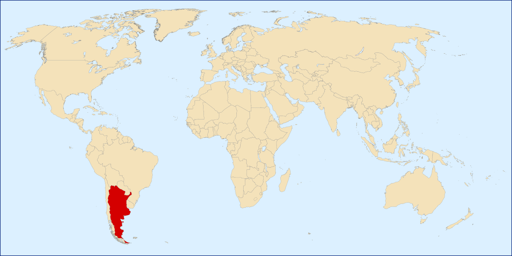
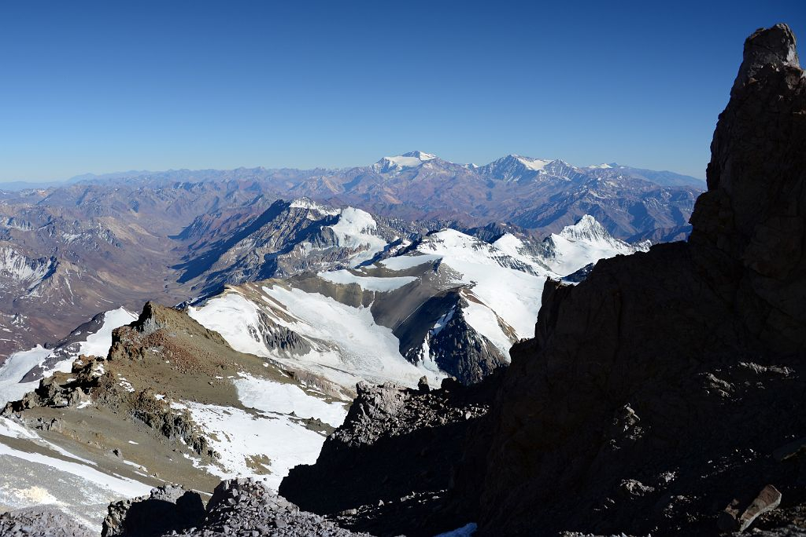

Аргентина
Краткая информация
-
Место: 8 (ТОП-10)
-
Площадь: 2 780 400 км²
-
Население: 47 327 407 чел. (2022 г.)
-
Столица: Буэнос-Айрес
-
Язык: Испанский язык
-
Валюта: Аргентинское песо, $ (ARS)
-
Крупнейшие города: Росарио, Мендоса, Кордова, Мар-дель-Плата, Ла-Плата, Сан-Мигель-де-Тукуман
Георафическое положение и границы
-

Аргентина
Второе по территории и третье по населению государство Южной Америки, состоящее из 24 административных единиц - 23 провинций и федерального столичного округа Буэнос-Айрес. Крупнейшая по площади в мире испаноязычная страна.
-

Аргентина на карте мира
Аргентина занимает юго-восточную часть материка Южной Америки, восточную часть острова Огненная Земля и близлежащие острова Эстадос и др. Граничит на западе с Чили, на севере с Боливией и Парагваем, на северо-востоке — с Бразилией и Уругваем. На востоке омывается водами Атлантического океана. Берега изрезаны мало, лишь эстуарий Ла-Платы врезается в сушу на 320 километров. Территория Аргентины вытянута в меридиональном направлении. Наибольшая её протяжённость с севера на юг составляет 3,7 тысяч километров. Большая протяжённость морских границ сыграла важную роль в развитии её внешних экономических связей.
Часовой пояс Аргентины
Аргентина в настоящее время использует 1 часовой пояс , ART UTC -03:00
Разница во времени c Москвой -6 часов
Климат
В Аргентине самый холодный месяц июль, самый жаркий – январь.
На вытянутой по берегу Атлантического океана территории по мере отдаления от экватора к южному полюсу тропический климат сменяется субтропическим, далее умеренным. На западе, высокие Анды защищают от воздействия на климат Тихого Океана. И погода формируется под воздействием Атлантического океана и Анд.
На севере, в Гран-Чако находится «полюс жары» Южной Америки. Жарким влажным летом, идут сезонные ливневые дожди. Зима мягкая и сухая. Воздух в январе поднимается до +30…+40 °С, зимой опускается до +17…+20 °С.
В Центральной Аргентине жаркое лето, дожди с бурями, грозами и частым градом в западной части, прохладные зимы. Ср. температура января +22°С - июля +11°С.
-
Буэнос-Айрес
Для юга характерно теплое лето и сильные снега и холод зимой. Самым холодным является остров Огненная Земля.
В Андах довольно разнообразный климат. В восточных склонах гор часто идут дожди, летом бывают наводнения. В высокогорьях сухо, не больше 200 мм осадков. Температура у подножья горы и на больших высотах могут отличатся до +30 градусов. +26°С в низине - +4 на вершине.
В Аргентине часто дуют сильные ветра. На равнинах Пампы и Патагонии бывают сильные бури. В центральных районах страны можно наблюдать настоящие торнадо.
Интересный факт: В Аргентине времена года делятся не как у нас, а по дням солнцестояния. Так 21 декабря начинается лето, 21 марта осень, 21 июня зима и 21 сентября весна.
Природа Аргентины
Природа Аргентины разнообразна вследствие большой протяжённости страны с севера на юг и различий в рельефе. По строению поверхности страну можно разделить примерно по 63° з. д. на две половины: равнинную — северную и восточную, возвышенную — западную и южную.
Вдоль всей западной границы Аргентины простираются Анды, поднятые в основном во время альпийского горообразования. Они отличаются сложностью и разнообразием геологического строения. На северо-западе, между северной границей страны и 28° ю. ш., на высоте 3000—4000 м лежит обширное замкнутое вулканическое плато — Пуна. Горы, обрамляющие Пуну с востока, поднимаются до 6500 м и заканчиваются величественными снежными вершинами — невадос. Южнее Анды резко сужаются. Наибольшей высоты достигают они в центральной части (между 32° и 37° ю. ш.), где преобладают альпийские заострённые формы рельефа. Здесь поднимаются самые высокие вершины Южной Америки: Аконкагуа (6960 м), Тупунгато, Мерседарьо.
На севере, от северной границы до 29° ю. ш., и до реки Параны на востоке расстилается равнина Гран-Чако, заполненная обломочным материалом и аллювиальными наносами. Междуречье Параны и Уругвая — это в основном равнинная область, сложенная красными песчаниками и мергелями, перекрытыми толстым слоем глинистого аллювия и лёсса. Северная часть области представляет собой лавовое плато, являющееся частью лавового плато Бразильского плоскогорья. Центральная часть Междуречья — плоская заболоченная низменность. А юг — всхолмленная равнина, пересеченная песчаниковыми грядами — кучильяс.
В Аргентину входит такие природные зоны:
- Область высотной поясности — в горах природные зоны меняются с высотой.
- Полупустыни и пустыни — очень жарко, многие месяцы не выпадают осадки.
- Лесостепи и степи — теплый и сухой климат, с небольшим количеством осадков.
- Влажные экваториальные леса — круглый год очень жарко и много дождей. Аргентинские леса, по оценкам, занимают около 50,9 млн. га, или около 18,6% от общей площади.
- Саванны, редколесья и кустариники — всегда жарко, дожди идут только летом.
Горы в Аргентине (5 самых высоких)
- Аконкагуа, 6 962 м
-
Аконкагуа
- Охос-дель-Саладо, 6 893 м
-

Охос-дель-Саладо
- Монте-Писсис, 6 795 м
-

Монте-Писсис
- Серро-Бонете, 6 759 м
-

Серро-Бонете
- Трас-Крусес-Сур, 6 749 м
-
Трас-Крусес-Сур
Аконкауга – гора в западной провинции Мендоса, западно-центральная Аргентина, на чилийской границе. Это самая высокая точка в Западном полушарии.
Аконкагуа лежит в Южных Андах; хотя пик находится в Аргентине, его западные фланги зарастают из прибрежных низменностей Чили, к северу от Сантьяго. Его название, возможно, происходит от кечуа Акон Кахуак («Каменный Страж»).
Аконкагуа имеет вулканическое происхождение, но сам по себе не является действующим вулканом. Есть две вершины – север и юг – соединенный горным хребтом (Креста дель Гуанако), который составляет приблизительно 0,6 мили (1 км) в длину.
Одной из самых привлекательных достопримечательностей, связанных с посещением Охос-дель-Саладо, является тот факт, что это самый высокий вулкан не только в Южной Америке, но и во всем мире.
Войдя в Книгу рекордов второй раз подряд, Охос-дель-Саладо также является рекордсменом среди самых высокогорных озер на планете. По мере приближения к вершине, примерно за 500 метров до самой высокой точки возвышения, на высоте 6 390 м или 20 960 футов появляется постоянное кратерное озеро, что делает его самым высокогорным озером в мире.
Район полностью вулканический, с лавами разных цветов, «лагунами» с водопадом из тяжелых металлов и некоторыми снежными пятнами, в большинстве случаев, вымирающими. Засушливая природа экстремальна, почти без растительности, но с очень разнообразной фауной; при восхождении можно увидеть викуний, гуанако, ослов, фламинго, кондоров и некоторых других птиц.
Серро Бонете – потухший вулкан, расположен недалеко от горы Писсис, на северной оконечности Сьерра-де-ла-Панилья, где он встречает Анды, недалеко от чилийской границы (хотя и не на ней) и границы с провинцией Катамарка.
Он имеет кальдеру около 6 км в диаметре, выветренную в небольшие плоские «мезеты». Очень интересным является озеро протяженностью 2 км, расположенное в южной части кальдеры, с чистой водой. Некоторые гидротермальные воздействия могут быть причиной слабых теплых источников, питающих озеро.
Вулкан стекает на юг, питая прерывистый поток, который соединяет реку Де ла Пунилья и образует реку Бонете.
Трас-Крусес-Сур представляет собой массив вулканического происхождения в Андах на границе Аргентины и Чили. Он имеет две основные вершины: Tres Cruces Sur на высоте 6 749 метров и Tres Cruces Centro на высоте 6 629 метров и еще одну небольшую вершину – Tres Cruces Norte – 6 206 м.
Вулкан имеет богатую историю своей активности, насчитывающую как минимум 1,5 миллиона лет. Комплекс окружен лавовыми куполами, а на его вершинах лежит множество кратеров.
Главный вулкан имеет риодацитовый состав и породил два крупных игнимбритовых извержения: одно 1,5 миллиона лет назад, а второе 67 тысяч лет назад. Последнее извержение было 28 000 лет назад, но вулкан является потенциальным источником извержения голоцена, и он может стать активным в будущем.
Реки и озёра Аргентины
Наиболее крупная сеть рек находится в северо-восточной части страны в бассейне Лаплатской низменности. По этой территории протекают реки Игуасу, Пилькомайо, Сан-Хавьер, Реконтиста, Саладо, Парана, Парагвай, Уругвай. У всех рек этого бассейна, кроме Парагвая, возможны резкие сезонные подъемы уровня воды и наводнения. Паводки Парагвая сдерживают болота, через которые пролегает путь реки. На западе, в равнинно-котловинной части страны находится бессточная область. На северо-западе Аргентины реки практически лишены стока.
Что касается озер, то большая их часть располагается в южной части страны. Только в предгорьях Анд их насчитывается более четырехсот. Озерный край Аргентины именуется Патагонией: все озера в этой части имеют ледниковое происхождение.
Крупные озера Аргентины
- Озеро Лаго-Архентино
-

Озеро Лаго-Архентино
- Озеро Буэнос-Айрес
-

Озеро Буэнос-Айрес
- Озеро Мар-Чикита
-

Озеро Мар-Чикита
Или, как его часто называют, просто Архентино. Это крупнейшее озеро во всей стране, площадь его поверхности составляет почти полторы тысячи километров. При этом открыт такой гигант был сравнительно недавно, всего лишь в 1782г.
Оно располагается в национальном парке под названием Лос-Гласьярес и подпитывается талой водой, поступающей из ледников. С Архентино также сообщается озеро Вьедма, в него впадает множество рек и ручьев. Здесь обитает огромное количество рыбы, поэтому зачастую на Лаго-Архентино приезжают рыбаки, а также любители живописных пейзажей: в окрестностях их предостаточно.
Как и все озера Патагонии, Буэнос-Айрес характеризуется ледниковым происхождением. Располагается оно на аргентино-чилийской границе на высоте 208км. над уровнем моря. Привлекателен пейзаж Буэнос-Айреса: его западный берег – фьордообразный, покрытый лесами, а восточный край водоема располагается на плато и обрамляется моренами. Озеро сообщается с озером Бертран, вода из которого поступает в р.Бейкер, а дальше – в Тихий океан.
Название этого озера переводится как «маленькое море». Это единственное соленое озеро в стране, которое к тому же является бессточным. Мар-Чикита подпитывается речными водами, преимущественно Рио-Дульсе.
Раньше берега часто попадали под наводнения, позже города и прибрежные зоны стали проектировать с целью предотвращения возможных разливов. Сейчас пейзаж «маленького моря» необычен: в его центре расположено несколько живописных островов, на южном берегу находится курорт, на севере – крупный солончак. Тем не менее остатки разрушенных водами городов напоминает об истории этих мест. По всем берегам озера гнездятся патагонские чайки, а также нежно-розовые чилийские фламинго.
Водопад Игуасу (Cataratas del Iguazu)
«Бедная Ниагара!» - воскликнула Элеонора Рузвельт, едва бросив взгляд на водопады Игуасу. Это захватывающее дух зрелище природы расположено на границе Бразилии и Аргентины. Буйство природных стихий поразило взор не одной первой леди: сюда, к водопадам Игуасу, стремятся туристы со всех концов света.
-

Водопад Игуасу
Вулканы Аргентины
- Гора Аконкагуа (Aconcagua)
-

Гора Аконкагуа
- Вулкан Майпо (Maipo)
-
Вулкан Майпо
Гора Аконкагуа — самый высокий в мире потухший вулкан. Её высота составляет 6 962 метра. Аконкагуа является высшей точкой Американского континента, Южной Америки, западного и южного полушарий.
Сегодня она покрыта вечными снегами. С трудом верится, что много лет назад эта вершина периодически извергала потоки лавы из своих глубин. А все потому, что Аконкагуа образовалась в результате столкновения двух тектонических плит – Южно-Американской и Наска, и достаточно длительное время просуществовала в виде действующего вулкана.
Майпо — активный вулкан на границе между Аргентиной и Чили. Он расположен в 90 км к югу от Тупунгато и приблизительно в 100 км к юго-востоку от Сантьяго. Его высота составляет 5264 метра.
Хотя вулкан Майпо возвышается над уровнем моря более чем на пять тысяч метров, он не относится к самым высоким горным вершинам. Например, один из его ближайших соседей - вулкан Кастильо - высотой приблизительно пять с половиной тысяч метров. Залог популярности Майпо не высота, а уникальная неповторимая форма. В отличие от своих соседей-вулканов Майпо имеет абсолютно симметричную коническую вулканическую форму. Благодаря этой особенности Майпо и заработал место в списке основных природных достопримечательностей Аргентины и Чили.
Остров Огненная Земля (Isla Grande de Tierra del Fuego)
Огненная Земля — самый крупный остров Южной Америки кажется одновременно и восхитительным, и очень неприветливым. До последнего ледникового периода он был соединен с материком. А сегодня здесь смешиваются воды Атлантического и Тихого океанов. Просторы севера и востока переходят на юго-востоке в причудливый, нежилой, негостеприимный ландшафт. Лишь вершины горных хребтов, затонувших после ледникового периода, высятся из моря по берегам Магелланова пролива. Самый западный из островов называется Дезоласьон, что означает: «безнадежность».
-
Остров Огненная Земля
Флора и фауна
Растительность Аргентины отличается большим многообразием: от тропических лесов до полупустынь в Патагонии и Пуне. В северном Междуречье растут субтропические леса с разнообразным видовым составом. Здесь встречаются обладающие ценной древесиной араукария, седро, лапачо. Южнее преобладает кустарниковая растительность; заболоченные пространства покрыты камышами, тростниками, кувшинками, а возвышенные и сухие — лугами с богатым травяным покровом. Встречаются разреженные леса из акаций, мимоз, страусового дерева, по берегам рек — пальмовые рощи.
По направлению к югу становится больше открытых травянистых участков, южная часть провинции Энтре-Риос — злаковая прерия и представляет уже переходную область к Пампе. Пампа в переводе с языка индейцев кечуа означает «лишенная древесной растительности». Бескрайние степные пространства Влажной Пампы были покрыты когда-то многолетними злаками — ковылём, перловником, диким просом и пёстрым красочным разнотравьем. Однако естественной растительности здесь осталось мало, значительная часть территории распахана, а некогда покрывавший её травянистый покров, служивший прекрасной естественной кормовой базой для животноводства, в результате длительного выпаса скота, был засорён сорняками и потерял свой первозданный вид. Для Сухой Пампы характерна ксерофильная растительность — низкорослые деревья, колючие кустарники, жёсткие травы. Аналогичная растительность распространена и на засушливом западе, в межгорных бассейнах, там пучки жёстких злаков и ксерофильных кустарников чередуются с кактусами.
-
Джунги Аргентины
Лесами в Аргентине занято 12 % земельного фонда. Наибольшую ценность представляют хвойные леса Междуречья и влажных Анд, а также леса кебрачо в Чако. Их эксплуатация затруднена тем, что они расположены в отдалённых районах, поэтому предпринимаются попытки искусственных лесонасаждений в самом обжитом районе — Пампе.
-

Лес Аргентины
-

Тропические леса
Наиболее освоены лесные ресурсы Чако, но здесь в результате длительной хищнической эксплуатации, остро стоит вопрос их серьёзной охраны и восстановления. Фауна Аргентины не столь богата и разнообразна, как в других странах Латинской Америки, но имеет немало эндемичных видов. К их числу относятся пампасский олень, пампасская кошка, магелланова собака. Почти все эти животные обитают в Андах и их предгорьях, а также в малонаселённой области Патагонии. В Пуне встречается реликтовый очковый медведь.
На открытых полупустынных пространствах Патагонии и в саваннах Чако распространена пума. В Андах ещё встречаются викунья, обладающая мягкой шерстью, и чинчилья (шиншилла) с нежным серебристым мехом. Однако и те, и другие подверглись почти полному истреблению. Много грызунов, броненосцев. В Чако, Междуречье, Патагонии широко распространены нутрии, выдры.
В болотах и озёрах повсюду обитают водоплавающие птицы, многие из которых выделяются своей яркой окраской. На берегах водоёмов можно увидеть фламинго, цаплю. В лесах встречаются колибри, среди которых есть и эндемичные виды, например, так называемый порхающий изумруд в Патагонских Андах.
-

Шиншилла
-

Андский фламинго
Природные ресурсы
Обеспеченность полезными ископаемыми
Многообразие рельефа и особенности геологического строения способствуют богатству страны минерально-сырьевыми ресурсами. Но государство не имеет таких залежей полезных ископаемых, как другие страны Латинской Америки. В Аргентине в изобилии имеются урановые, марганцевые, свинцово-цинковые, вольфрамовые и железные, медные руды, бериллий. По обеспеченности урановыми рудами республика входит в десятку ведущих стран мира.
Многочисленные месторождения нефти и природного газа находятся преимущественно в полосе Атлантического побережья. Юг богат угольными месторождениями. По наличию топливного сырья республика находится на третьем месте среди стран Латинской Америки. Государство имеет значительные запасы строительного сырья — в частности мрамора, гранита. Для изготовления стекла и различных фармацевтических препаратов используются немалые залежи самородной серы.
Значительные запасы полезных ископаемых Аргентины находятся в малонаселенных и малоосвоенных районах, что во многом осложняет их разработку. Но эти территории обладают превосходным потенциалом, т. к. могут стать ступенью для освоения дальних районов и сыграть большую роль в развитии различных отраслей хозяйства.
Основные водные и лесные ресурсы
Аргентина владеет богатыми земельными ресурсами. Сельские угодья в системе земельного фонда занимают до 70% с преобладанием пастбищ. Выгодные агроклиматические ресурсы содействуют развитию животноводства и сельского хозяйства (культивирование злаковых). Лесные массивы имеют площадь всего лишь до 13% территории Аргентины.
С водой проблем нет, поскольку именно водные богатства занимают существенную долю в хозяйстве страны. Реки гор Анд способствуют гидроэнергетическому строительству, именно эти воды орошают засушливые районы. Для гидроэнергетики используются реки, в том числе Рио-Колорадо.
Благодаря речным водам развивается экономика и инфраструктура. Территория страны изобилует озерами, и существенная их часть обладает ледниковым происхождением. Большинство районов обеспечиваются водой с помощью подземных источников.
Биологические ресурсы
Флора представлена растительностью, характерной в основном для лесного симбиоза, лугов, степей и саванн. Злаки выращиваются в засушливых местах. Среди основных растений можно назвать кактусы, акацию, мимозу. На Гран-Чако растут восковые пальмы, дерево кебрачо и другие растения.
В горах более всего распространены субтропические леса, занимающие пятую часть всей местности. Здесь можно встретить седро, лапачо. Юг — родина кустарников, мимозы, акаций, пальм. На болотах можно увидеть кувшинки, камыши и т.п.
Леса из ивы, мятликовых зарослей, овсяницы расположены в Патагонии. Из представителей фауны в Аргентине обитают: пампасские кошки, олени, серые лисицы, страусы, попугаи и прочие животные. В полупустынной местности можно встретить пуму, броненосца, выдру, нутрию. На болотах обитают фламинго и цапли.
-
Гран-Чако
-
Патагония
Отдых
Пляжный отдых
Начнём с пляжей, потому как в нашей холодной стране это самый главный вопрос. Кто не любит понежиться на солнышке? Из-за южного расположения Аргентины, Атлантический океан здесь холодный, а летний сезон короткий — с декабря по март. В Аргентине два основных морских курортных города.
- Mar del Plata
-

Mar del Plata
- Miramar
-
Miramar
Mar del Plata, пожалуй, самый популярный курорт в Аргентине. Все жители Буэнос-Айреса перебираются на лето именно сюда, а некоторые имеют здесь летние резиденции. Находится город 400 км южнее Буэнос-Айреса. Туристов из других южноамериканских стран вы вряд ли встретите в Мар дель Плата. Этот потрясающий пляж растянулся на 17 км. В основном сюда едут лишь жители столицы, а потому отдых обойдётся вам недешево.
Mar del Plata — это портовый город, история которого насчитывает несколько столетий, поэтому, помимо пляжей, в городе полно достопримечательностей и альтернативных развлечений, таких, как зоопарк, музей ракушек, шоу морских котиков. Северная часть города — очень красивые спокойные бухточки. А ещё Mar del Plata — это столица рыбных блюд и блюд из морепродуктов. А в марте здесь проходит международный кинофестиваль Festival Internacional de Cine de Mar del Plata.
Более спокойный городок находится чуть южнее Mar del Plata и называется Miramar. С испанского название переводится как "посмотрите на море". Он намного меньше портового курорта, и поэтому отдых здесь поспокойнее и подешевле. Пляж протянулся на 12 км. В городе всего 37 ресторанов и 13 кафе на пляже. Помимо пляжного отдыха, здесь есть и другие развлечения, например, можно порыбачить в лагуне, которая находится недалеко от Мирамар, или отправиться в хвойный заповедник. Кстати, воздух в заповеднике считается целительным.
Горнолыжные курорты
Горнолыжный сезон здесь с мая по октябрь. Все курорты технически хорошо оснащены, очень много трасс и снега. Гибкая система скипассов даст вам возможность распланировать свой активный зимний отдых. Также при всех центрах работают школы обучения горным лыжам и сноуборду детей, а также школа для начинающих взрослых. Можно взять индивидуального инструктора. Вот только в Аргентине этот спорт очень дорогой, кататься здесь могут позволить себе люди с достатком.
- Барилоче (Bariloche)
-
Барилоче
- Серро Чапелко (Cerro Chapelco)
-
Серро Чапелко
- Лас Леньяс (Las Leñas)
-
Лас Леньяс
- Кавауэ (Caviahue)
Самым популярным курортом в стране является Барилоче (Bariloche), расположенный в Патагонии на высоте 1000 метров. Здесь 47 трасс протяженностью 70 км и 20 подъемников. Трассы рассчитаны на лыжников и сноубордистов разного уровня. Также есть сноу-парк. Горнолыжный курорт Барилоче оснащён лучшим на континенте подъёмником на 6 человек. Является самым дорогим курортом в Аргентине. Расположен в непосредственной близости к городу Сан Карлос де Барилоче (San Carlos de Bariloche).
Здесь же в Сан Карлос де Барилоче самый большой спортивный комплекс в стране — Серро Катидрал (Cerro Catedral). Этот курорт считается самым современным в Южной Америке. Снега здесь много и его хорошее состояние поддерживают с помощью снежных пушек. Перепад высот составляет от 1400 до 2300 метров с 53 трассами протяженностью 100 км, и работает 40 подъёмников.
В Патагонии есть курорты и поскромнее, но ничем не хуже. Например, горнолыжный курорт Серро Чапелко (Cerro Chapelco). Здесь есть и школа для детей, и трассы среднего уровня, и чёрные трассы для экстремалов. На его склонах расположены рестораны с самой вкусной кухней в горах. Напоминает здесь всё Швейцарию: домики, улочки, горные озера. А с трасс можно увидеть вулкан Ланин и вулкан Вильярика в Чили.
Ещё один горнолыжный курорт в Аргентине - Las Leñas (Лас Леньяс), расположенный в 400 км от крупного города Мендоса (Mendoza). Может добраться туда и не так легко, как до Патагонских центров, зато условия идеальные. Жить придется прямо у подножия склонов, потому что до близлежащих городков не близко. Зато здесь и трассы в хорошем состоянии, и снежные пушки, и подсветка трасс, и сноупарк с фигурами и хаф-пайпом.
И одно из красивейших горнолыжных мест — это Caviahue (Кавауэ). Курорт находится в 350 км от города Неукен (Neuquen). Это очень живописное место у подножия вулкана Copahue (Копауэ) на высоте 1647 метров. Сам центр находится на берегу озера с хорошо развитой инфраструктурой. Но самым приятным бонусом наличие бальнеологического курорта Terma de Copahue (Термас де Копахуе) на высоте 1900 метров, построенный на базе одноименного горячего источника. Так что отдых можно разнообразить, либо же посетить это место семьёй, даже если и не все члены семьи катаются. Термас де Копахуе известен своими лечебными процедурами и сухим микроклиматов с чистейшим воздухом.
Национальные парки
В Аргентине 33 национальных парка, 4 из которых являются объектами ЮНЕСКО.
На севере страны есть совершенно мистические парки Parque Nacional Talampaya и Parque provincial de Ischigualasto. Они расположены совсем рядышком друг с другом. Когда-то очень давно здесь обитали уникальные виды динозавров, останки которых можно увидеть в музее. Причудливые формы скал из песчаника не дадут покоя вашей фантазии, а круглые камни парка Исчигуаласто оставят много вопросов в вашей голове. Парки занесены в список ЮНЕСКО и путешествовать без гида здесь нельзя.
Одним из самых посещаемых парков в Аргентине является Parque Nacional Los Glaciares, который занесён в список объектов ЮНЕСКО. Парк очень большой, знаменит своими ледниками (отсюда и его название) - их всего 48, расположен в трёх природных зонах, лесной массив является самым южным на Земле, озеро Архентино (Argentino) в южной части парка - крупнейшее в стране. Этот парк за один день не посетишь. Этот ледяной массив в Аргентине является третьим по величине после льдов Антарктиды и Гренландии. Из-за южного расположения парка треки открыты лишь в летнее время с ноября по апрель. В северной части можно совершить восхождение к знаменитой горе Фитц Рой (Fitz Roy), совершить водную прогулку по озеру Вьедма (Viedma) к леднику с таким же названием, а при желании совершить прогулку по леднику в составе экскурсии.
-

Parque Nacional Los Glaciares
-

Parque Nacional Los Glaciares
Южная же часть парка знаменита своим озером Argentino с водой молочного цвета и одним из крупнейших ледников Perito Moreno (Перито-Морено). Ледник является третьим по величине запасом пресной воды в мире, высота его 60 метров, а скорость движения 2 м в день. Поэтому если запастись терпением, то можно дождаться отрыва части ледника от основного массива, который с грохотом падает в озеро. По поверхности ледника организованы экскурсии. Также можно отправиться на обзорную экскурсию на корабле, чтобы увидеть и другие крупные ледники (Упсала и Спегаззини), ведь дорог туда нет.
Ну и самым южным национальным парком в мире является парк El Parque Nacional Tierra del Fuego (Огненная Земля). Здесь расположен канал Бигл (Beagle), соединяющий Тихий и атлантический океаны. Здесь заканчиваются Панамериканское шоссе и самая южная в мире железная дорога. На территории парка очень много лагун и озёр, уникальных деревьев и животных. А на вершинах гор вы увидите ледники.
Кухня
Национальная кухня Аргентины была подвержена сильному влиянию европейской кухни. В результате в традиционных блюдах страны можно увидеть следы индейского, креольского, африканского, итальянского и испанского народов.
Каждый регион Аргентины имеет собственные кулинарные особенности. Их можно условно разделить на 4 части:
Северо-западная (провинции Ла-Риоха, Тукуман, Жужуй, Сальта). Данная часть страны меньше всего подвергалась влиянию европейцев, поэтому здесь сохранились традиционные блюда Аргентины. Из овощей аборигены предпочитают чайот, авокадо, помидоры, киноа, фасоль, амарант и т.д. Наибольшей популярностью здесь пользуются локро, эмпанады и кукурузный пирог.
Северо-восточная (провинции Формоса, Мисьонес, Чако, Корриентес, части Сантьяго-дель-Эстеро, Санта-Фе, Энтре-Риоса). Здесь преобладает влияние индейского племени гуарани. Основными продуктами являются пресноводная рыба, рис, маниока. В этом районе готовят парагвайский суп, бульон ревире, мбеху из сока юкии на основе маниоки, чипу, сыры и другие блюда Аргентины. Из напитков аборигены предпочитают фруктовые фреши, мед, сердцевину пальм, кокосы, а также сок из кактуса уклея.
Центральная (провинции Кордова, Буэнос-Айрес, части Ла-Пампы, Энтре-Риоса, Санта-Фе). Эта территория больше всего подвергалась влиянию испанцев и итальянцев. В местных рецептах преобладает мясо, из которого готовят чурраско, эскалопы, бефстроганов, отбивные и т.д. Особой популярностью среди населения пользуется пицца и паста.
Юг (Огненная Земля, Санта-Крус, Чубут, Рио-Негро, Неукен). В данном районе любят готовить блюда из оленины, баранины, козлятины, свинины, птицы (страусов эму и нанду) и морепродуктов: касуэл, паштеты и т.д.
Популярные национальные блюда Аргентины
В национальной кухне Аргентины преобладают блюда из морепродуктов (крабов, устриц, форели, креветок, угря, кальмара), оливкового масла, пряностей и говядины, которую здесь употребляют в огромных количествах. Рыбу в стране маринуют, фаршируют, сушат, вялят, варят и жарят, из мяса здесь делают шашлык, колбаски.
Самыми популярными блюдами являются:
- Фаина (Fainá) – пирог на основе оливкового масла и муки с добавлением турецкого гороха;
- Висачи – мясо грызуна, которое жарят по особому рецепту;
- Эмпанадас – это пирожки со всевозможными начинками из мяса и овощей. Их выпекают как в духовке, так и во фритюре;
- Миланесас (Milanesas) – мясная отбивная, обваленная в сухарях и специях. Иногда сверху кладут помидоры, сыр и ветчину и запекают, и тогда блюдо будет называться миланеса наполитана;
-
Эмпанадас
-
Миланесас
- Мошехас (mollejas) – это местный деликатес из зобной железы;
- Биф де ломо – блюдо из говяжьих ребрышек, которое готовится на углях;
- Биф де чоризо – большой стейк, весом до 1,5 кг и толщиной до 5 см;
- Асадо – это блюдо Аргентины, которое имеет строгий ритуал приготовления: кровяные колбаски, сосиски, говядину медленно жарят на углях, в качестве гарнира подают хлеб, картошку-фри и салат;
Десерты в Аргентине
Сладости аборигены любят и готовят их из меда, чайоты, айвы, батата и даже амброзии. Многие рецепты блюд видоизменяются в зависимости от района и фруктов, произрастающих там. Наиболее любимыми десертами в стране являются:
- Dulce de leche – это вареная сгущенка, которая используется в качестве начинки для печенья, конфет, тортов и других сладостей;
- Флан – классический пудинг из молока, сахара, яиц и ванили;
- Queso con dulce – это толстый ломоть сыра с добавлением желе из батата или айвы;
- Масаморра (Mazamorra) или кагийи (Сaguiyi) – сельский десерт, приготовленный из молока, сахара, ванили и маиса, а употребляют его с медом;
-
Флан
-
Масаморра
- Мороженое – наиболее популярным вкусом здесь считается десерт со сгущенным молоком, который называется хеладо.
Традиционные напитки Аргентины
Самыми любимыми напитками аргентинцев являются:
Чай матэ (mate). Он обладает бодрящими и полезными свойствами, отлично утоляет жажду и голод. Его готовят из растения, которое называется йерба матэ, также могут добавлять лед, смеси трав, цитрусовые соки. Пить чай принято из специальных сосудов, называющихся калабаса и изготавливающихся из бутылочной тыквы.
Аргентинские вина. Они славятся во всем мире. Самыми известными из них являются Мальбек (из Мендоса), Торронтес (провинция Сальта и Ла-Риоха). В стране производят лучшие красные вина в Южной Америке.
Алоха. Находясь в Аргентине, попробуйте местное пиво, которое называется алоха.
Крепкие напитки. В стране производят джин и виски отменного качества.
Кофе. Любители этого напитка могут побаловать себя натуральным кофе, завезенным сюда из Колумбии и Бразилии.
- https://wikiway.com/argentina/#gl1
- https://pogoda33.ru/Климат-Аргентины
- https://wikiway.com/argentina/#gl4
- https://kratkoe.com/prirodnyie-zonyi-argentinyi
- http://ru.timeofdate.com/country/Argentina
- https://top10a.ru/samye-vysokie-gory-v-argentine.html
- https://сезоны-года.рф/воды%20Аргентины.html
- https://wikiway.com/argentina/dostoprimechatelnosti/
- https://wiki.fenix.help/geografiya/prirodnye-resursy-argentiny
- https://womanadvice.ru/kuhnya-argentiny
- https://travelask.ru/argentina/regiony-i-kurorty-argentiny-kuda-poehat